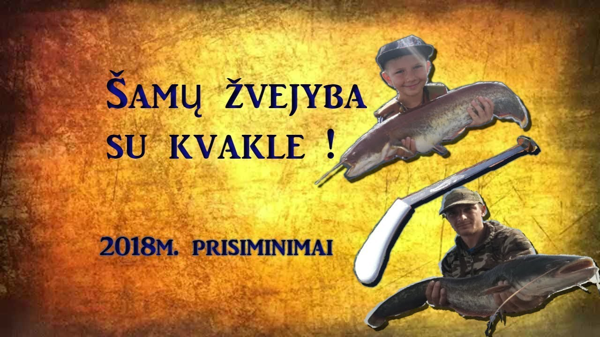

Žvejyba - PARDUOTUVĖ - www.prekes-visiems.lt

PRADŽIA PARDUOTUVĖ Pristatymo informacija Apmokėjimo informacija Prekių grąžinimas ir garantinis taisymas Terminai ir taisykles Kontaktai Galerija Trimerių ir benzininių pjūklų remontas Youtube kanalas Feeder led lempos automobilines bagazines
Ieškoti
Prekių kategorijos:
VISOS PREKĖS Vaizdo stebėjimo įranga WiFi pavienės kameros WiFi Kamerų komplektai AHD kamerų komplektai Kameros Kupolinės- Sukinėjamos PoE kamerų komplektai Medžioklinės kameros Muliažai - imitacinės kameros MicroSD ir HDD kieti diskai Įrankiai Trimeriai Grandininiai pjūklai Grandinių galąstuvai Žemės grąžtai Vejapjovės - žoliapjovės Gyvatvorių genėjimo žirklės Hidraforai Vandens siurbliai BENZININIAI Vandens siurbliai ELEKTRINIAI Vandens žarnos - šlangos PVC ir GAISRINĖS Tiesinio pjovimo staklės Skersinio pjovimo staklės Metalo pjovimo staklės Plytelių pjaustymo staklės Grežimo staklės Graztu galandinimo staklytės ir staklės Suvirinimo aparatai, skydeliai Raktų, galvučių KOMPLEKTAI Dujniai degikliai pajalnikai lietlempės Akumuliatoriniai suktukai Akumuliatoriniai smūginiai veržliasukiai Elektriniai smūginiai veržliasukiai Kompresoriai Gipso glaisto šlifuoklis - žirafa Kampiniai šlifuokliai, bulgarkės Akumuliatoriniai kampiniai šlifuokliai - bulgarkės Avių kirpimo žirklės Įrankių komplektai Oro pūstuvai Gervės - Libiotkės Benzininiai varikliai Siaurapjūkliai Šmirgeliai, Galąstuvai Tepalo, kuro siurbliukai Domkratai Šildytuvai - RAKETOS Elektros generatoriai Akumuliatorių įkrovikliai Poliravimo mašinėlės Skardos kirpimo žirklės Vamzdžių lituokliai Atramos Perforatoriai Statybiniai mikseriai, maišytuvai Cirkuliaciniai siurbliukai Frezos Pesticidų purkštuvai Tiesinis pjūklas - KROKODILAS Orapute - Fenas Dažų purkštuvai Graveriai Kreiziukai Multifunkciniai renovatoriai Gulsčiukas - Nivelyras Elektriniai šlifuokliai Šlifavimo juostiniai Šlifavimo trikampiai Šlifavimo vibro kvadratiniai Elektriniai sriegikliai Kultivatoriai Prailgintuvai Giluminiai vibratoriai LED Darbo šviestuvai Stabdžiu suportu suspaudejai Obliai ATSUKTI NULAUŽTIEM VARŽTAM LED šviestuvai KIEMUI IR PATALPOMS PATALPOMS 1,2m 0,6m Kiemo apšvietimui Su saulės kolektoriais LED panelės patalpoms Aktyvios kolonėlės DIDELĖS Nešiojamos kolonėlės KARAOKE Mikrafonai vaikams AUTO prekės Multimedijos 1DIN išvažiuojančiu ekranu multimedijos Video registratoriai Racijos Žemų dažnių garsiakalbiai Garsiakalbiai Automagnetolos Stiprintuvai Parkavimosi sistemos, ekranai, kameros LED lemputės XENON lemputės Laidų komplektai BOSAMS Darbo šviestuvai 12/24V LED marker Video registratoriai NEOLINE Automobiliniai virduliai Automobiliniai tepalai Aukšto spaudimo plovyklos FM MODULIATORIAI LED BAR ŽIBINTAS Judėjimo priemonės (dviračiai, paspirtukai, riedžiai) Elektriniai paspirtukai Paspirtukai Dviračiai Riedžiai Motociklas Žiūronai Prožektoriai MEDŽIOKLEI ŽVEJYBAI Ant šautuvo Ant galvos Laikikliai 25-30mm Jachtos, Kateriai, Valtys, Varikliai, Priedai Pripučiamos valtys Varikliai Gelbėjimosi liemenės Nardymo įranga Žvejyba Feeder led lempos automobilines bagazines Svarstyklės Medicinines kaukes Buitis LED juostos ir komplektai Šildytuvai patalpoms Universalūs įkrovikliai pakrovėjai Virtuvės reikmenys Elektrinės keptuvės Puodų rinkiniai Peilių rinkiniai Tarkavimo mašinos Blenderiai Seperatoriai Momentiniai vandens šildytuvai Laistymo žarnos šlangos Sveikata ir Grožis KRAUJOSPŪDŽIO MATUOKLIAI KLAUSOS APARATAI Anticeliulitiniai masažuokliai Plaukų džiovintuvai Plaukų tiesintuvai garbanotuvai Masažuokliai Treniruokliai Mobilieji telefonai AUTOMONILINIAI PRIEDAI Žaidimų konsolės Oro gultai - ORMAIŠIAI Plaukų kirpimo mašinėlės Baterijos ir akumuliatoriai ir įkrovikliai LED REKLAMINIAI STENDAI KALĖDOS LED šlanginiai briedžiai Žaislai Turisnes keptuves šildytuvai Spiruokliu suspaudejai SKRAIDANTIS DRONAI TRIKOJIS STOVAS DARBO ŠVIESTUVAM RANKINIAI VAMZDELIŲ PLĖSTUVAI UŽLŪŽUSIŲ VARŽTŲ IŠSUKĖJŲ RINKINIAI purkstuku ismusejai Prekės išrūšiavimuiKaunas, Senosios Obels g. 1!
Darbo laikas:
Pirmadienis - 9.00 - 18.00
Antradienis - 9.00 - 18.00
Trečiadienis -9.00 - 18.00
Ketvirtadienis -9.00 - 18.00
Penktadienis -9.00 - 18.00
Šeštadienis -9.00 - 18.00
Sekmadienis - 9.00 - 18.00
0 Visos teisės saugomos © 2020, El-parduotuvė www.prekes-visiems.lt
SEKITE NAUJIENAS FACEBOOK'E !
.